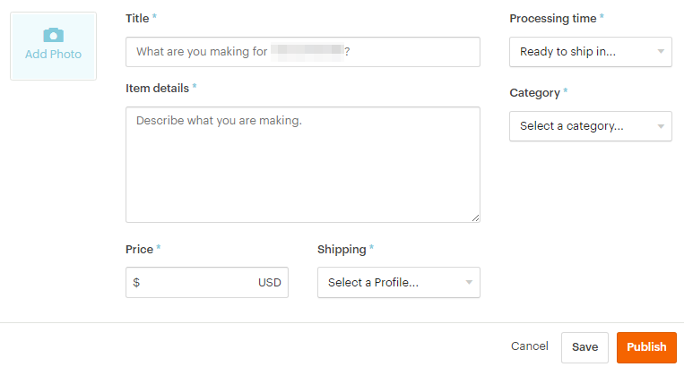
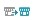
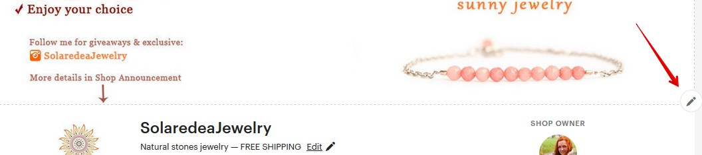

Если покупатель захочет сделать индивидуальный заказ, он сможет сделать за-
прос через кнопки:
• Request a custom order на главной странице магазина
• Contact a shop owner на главной странице магазина
• Message на странице листинга
У покупателя откроется поле для ввода сообщения, где он сможет описать свои
пожелания.
Вы, как продавец, сможете преобразовать такой запрос в приватный заказ. В
переписке у вас появится кнопка Make this a custom order, после нажатия на
которую вы сможете создать персональный листинг.

Как брать оплату за товары на заказ
Прежде всего стоит отметить, что работать под заказ следует только после пол-
ной или частичной оплаты от покупателя. Делается это для того, чтобы у вас
обоих была уверенность друг в друге.
Вариант 1 – частичная предоплата
В этом случае вы можете создать листинг с изображением макета товара или
просто с надписью «Custom Order». В заголовке можно указать, что этот листинг
создан специально для данного покупателя. Например, «Custom order for Lily».
Стоимость листинга выставите ту, которую согласуете с клиентом – например,
50% от конечной цены.
В описании обязательно укажите, что за товар будет создан и с какими харак-
теристиками. А также укажите полную стоимость товара с пометкой, что данный
листинг – это частичная предоплата. Чтобы у вас обоих была четкая договорен-
ность – что именно заказано покупателем и за что взяты деньги.
Отправьте ссылку на листинг покупателю, чтобы он оплатил аванс.
После того, как вы сделаете заказ, и покупатель его утвердит, создайте второй
аналогичный листинг – указав в стоимости оставшуюся сумму. Дождитесь
оплаты – и отправляйте покупателю его изделие.
Вариант 2 – полная предоплата и приватный листинг
После того, как покупатель нажал кнопку Request a custom order и обговорил с
вами детали заказа, вы можете создать прямо из переписки листинг, который
будет виден только вам двоим (меню Messages – Custom Requests – Build the
custom order).


Загрузите фотографию эскиза, укажите заголовок, подробное описание товара,
полную стоимость, способ доставки и время изготовления. А затем нажмите
Publish. Покупателю на его электронную почту придет письмо со ссылкой на
этот листинг.
Данный товар будет находиться в разделе Private раздела Listings.
И не забудьте продумать вариант, если клиент в итоге решит вернуть такой за-
каз после получения. Или, например, не захочет оплачивать оставшуюся сумму.
Вы можете указать в правилах магазина, что не принимаете к возврату работы,
выполненные на заказ. И обязательно пропишите правила индивидуальной ра-
боты в самом листинге.
Можно ли выставить товар для примера (портфолио работ)
Такая возможность есть, например, на сайте Ярмарка Мастеров.
Но на Etsy не заложено такого функционала.
Вы можете выставить либо уже готовый товар, либо тот товар, который можете
сделать под заказ – но он должен быть точно таким, каким показан на фото.
Либо, если точная копия невозможна, обязательно расскажите об этом в опи-
сании.
Хотя некоторые продавцы делают следующее: заново публикуют проданный
товар, пишут на его заглавной фотографии слово Sold (продано), а цену выстав-
ляют очень высокую – чтобы никто даже не подумал купить.
Что писать в описании товара
Описание товара – крайне важная часть листинга. Всё, что вы не можете или не
показали с помощью фотографий, следует указать в описании. Но также следует
учесть, что далеко не все покупатели внимательно читают этот текст – а кто-то
делает покупки, совсем не глядя в него.
В описании обязательно следует указать следующую информацию:
• размеры/вес/цвет (для физических товаров)
• формат и размеры файлов (для цифровых товаров)
Если это цифровой товар, то можно дополнительно указать, что покупатель по-
лучит именно файлы, а не посылку по почте.
Также можете в описании указать основные правила магазина:
• срок отправки
• срок доставки
• правила возврата/обмена
О том, что писать в описании, вам также поможет бонусный файл «Главные во-
просы ваших покупателей».
Чтобы увеличить число просмотров вашего магазина (ведь чем больше товаров
посмотрят покупатели, тем больше шанс, что им что-то понравится), вы можете


добавить в описание ссылки на похожие товары (по цвету, по стилю) или до-
полняющие их (перчатки к шарфу, кольцо к серьгам).
Как вставить ссылку в описание товара
Чтобы добавить в описание товара ссылку, нужно просто вставить её текст в
нужное место.
В описании товаров активные ссылки (на которые можно кликнуть) будут только
те, что ведут на другую страницу Etsy (на главную страницу магазина, другой
товар, секцию и т.п.).
Ссылки на другие сайты, например, Instagram или Facebook, Этси показывает
как обычный текст.
Можно ли добавить ссылки в описание проданных товаров
Отредактировать описание проданного товара можно, если только вы снова
сделаете этот листинг активным. Обновленная информация не будет отобра-
жена в ранее проданном товаре.
Сколько добавить листингов для начала
Нет каких-либо требований к количеству товаров. Есть успешные магазины со
множеством продаж, у которых меньше 10 товаров. А есть и те, у кого больше
сотни листингов – а вот продаж совсем мало.
Здесь в большей степени всё зависит от уникальности товаров, уровня конку-
ренции и насколько хорошо у вас прописаны SEO параметры. Но в общем и
целом, чем больше товаров, тем больше ключевых слов вы можете охватить –
и, соответственно, тем больше посетителей.
Не запрещено ли вставлять ссылки на Youtube
Нет, это не запрещено правилами Etsy. Но учитывайте, что ваша ссылка будет
неактивна. Её можно скопировать, но на неё нельзя кликнуть.

4. Настройки магазина
Сколько раз можно менять информацию о магазине (Shop
title, icon, banner и т.п.)
Вы можете менять любые настройки магазина бесконечное число раз. Это бес-
платно.
Единственное исключение – название магазина. Самостоятельно его можно из-
менить не больше 5 раз. После этого – только через обращение в службу под-
держки Etsy.
Как изменить название магазина
До момента окончательного открытия магазина его название можно изменить
неограниченное число раз. А вот после того, как магазин уже зарегистрирован
– самостоятельно не больше 5 раз.
После 5-го раза изменение названия возможно только после рассмотрения ад-
министрацией Etsy.
Чтобы изменить название магазина, нужно зайти в раздел Shop Manager – Set-
tings – Info and appearance – Shop Name – Change.



Введите в строке New Shop Name ваше новое название и сохраните изменения.
После того, как название изменится, все активные ссылки на ваши листинги и
страницы будут по-прежнему работать. Ваше предыдущее название никто дру-
гой впоследствии использовать не сможет. Рядом с новым названием появится
синий значок
который в течении 45 дней будет говорить посетителям о
переименовании.
Те клиенты, которые совершали покупку в вашем магазине до переименования,
всегда будут видеть оба ваших названия.
Если вы хотите изменить только написание строчных или прописных букв ва-
шего текущего названия – это не будет считаться переименованием.
Почему Etsy не даёт изменить название магазина
Скорее всего данное название занято другим магазином – открытым или уже
закрытым.
Как редактировать основные разделы магазина
Чтобы отредактировать основные разделы магазина, нажмите кнопку Edit shop
на главной странице магазина – и вы попадете в режим редактирования (далее
будем писать «перейдите в режим редактирования магазина»).

Второй способ – нажать на значок карандаша справа от названия магазина в
Shop Manager.
Что именно можно изменить, находясь здесь:
• баннер и логотип магазина, личную фотографию/аватар
• заголовок магазина/Title
• местоположение магазина
• популярные листинги/Featured listings
• объявление магазина/Announcement
• расположение товаров
• информацию «О магазине»/About с описанием, фотографиями, участни-
ками магазина, ссылками на профили в соцсетях
• список местных ярмарок, в которых вы планируете участвовать
• правила магазина/Shop policies
• часто задаваемые вопросы/FAQ
Какие есть варианты баннера
Вы можете выбрать:
• большой баннер (Big Banner, минимальный размер 1200 х 300 пикселей,
рекомендуемый – 3360 x 840)
• узкий баннер (Mini Banner, минимальный размер 1200 х 160 пикселей)
• без баннера (None)
Отличие большого баннера от маленького в высоте изображения – оно зани-
мает в 2 раза больше места и более заметно.



В платной подписке Etsy Plus также есть возможность установить карусель
изображений (4 картинки, которые сменяют друг друга) или коллаж из 2-4 фо-
тографий товаров.
Все варианты баннера показываются как на компьютере, так и в мобильном
приложении.
Как добавить баннер
Нужно перейти в раздел редактирования магазина и нажать на значок каран-
даша в правой стороне экрана.
После этого в левом верхнем углу нажмите на кнопку Change layout.